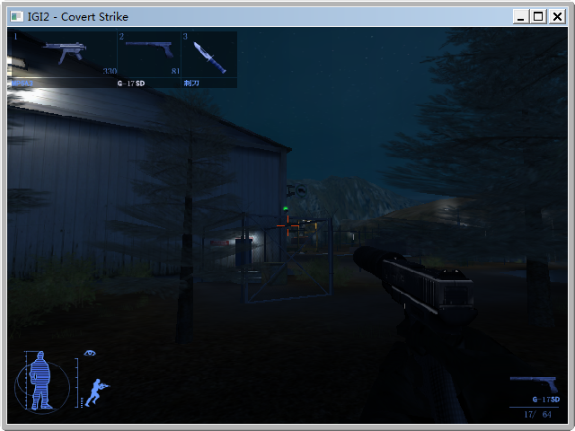
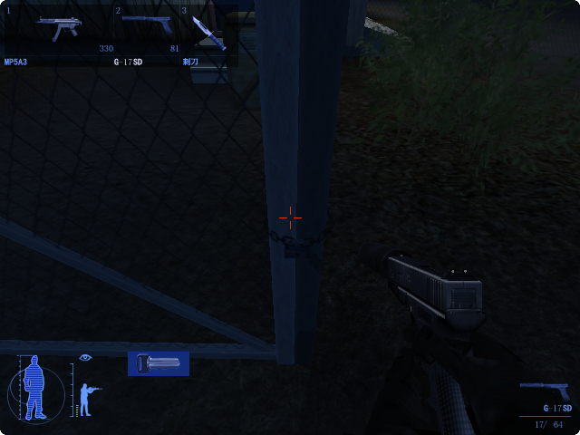
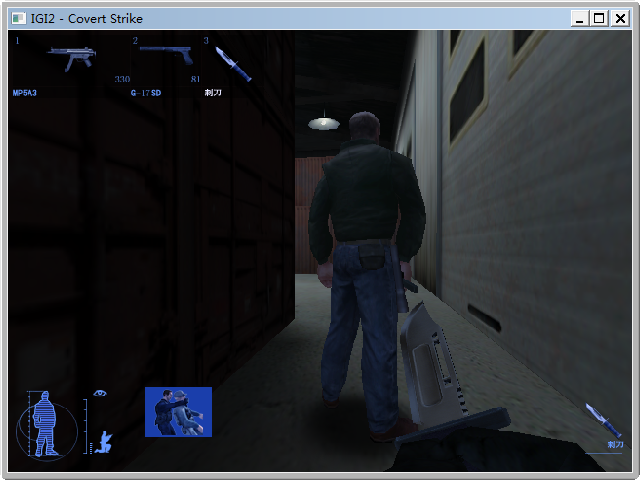
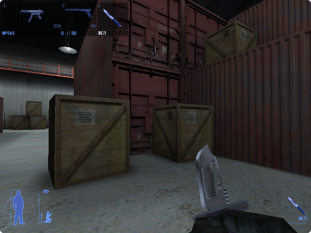
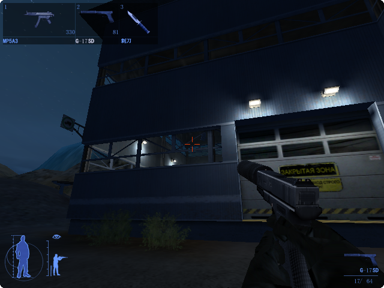
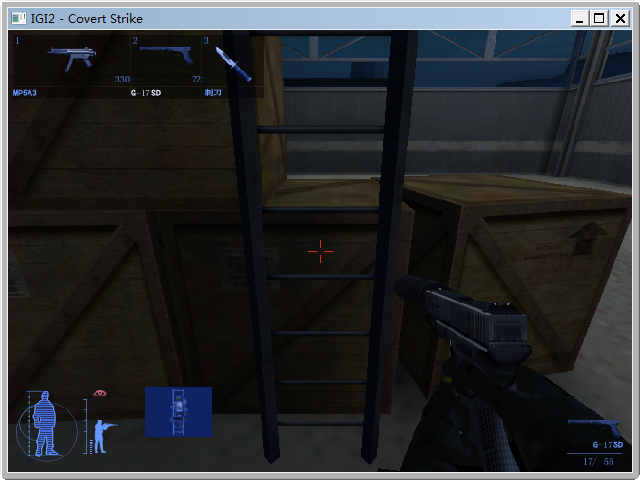
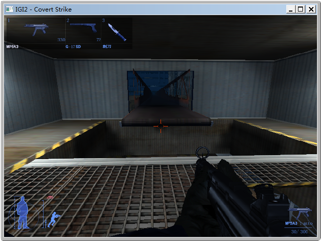
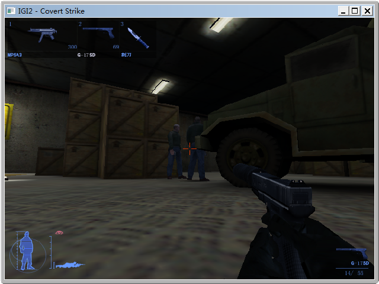
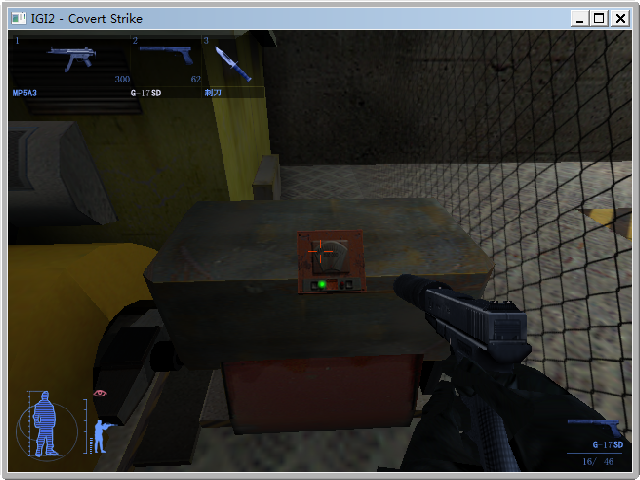

穿过右侧树林往有铁栅栏和门的方向走，按数字键2换上消声手枪G-17SD，用消声手枪打爆摄像头。

或者按B切换为望远镜，观察摄像头的朝向，当摄像头转向右侧时，走到栅栏门前按E开锁。
游戏中躲过摄像头的方法有：
按E键打开铁栅栏门锁。 也可以用枪打爆锁。

如法炮制，按E键打开蓝色门。
进门后，按Z键蹲下，按3切换为武器匕首，直行并靠近箱子后的守卫，靠近守卫后，E键变为可使用状态，按E杀死守卫。

用E键匕首杀死的敌人，不会发出声响，不容易惊动到附近的敌人。
按T键是热成像仪，可以看清仓库内敌人的位置和活动。
按空格跳跃，跳上红色集装箱，翻到集装箱对面。用热成像仪或望远镜观察敌人位置，不要被对面地面上的守卫和在楼上巡逻的守卫发现。

从仓库内另一头的蓝色门出来。
出来后，沿着铁栅栏走，穿过铁栅栏的缺口出到外面。
游戏中按M是电子地图。打开电子地图，可以看到地图上标注1、2之类的数字，那些地点就是游戏（建议的）攻略顺序。看地图我们知道现在要去1号建筑物。
穿过集装箱的洞。出洞前，用望远镜观察摄像头的朝向，当摄像头转向最左边的时候再跑出去。
外面敌人很多，注意保持蹲下，远离敌人视野。按M可以看首位视野，按T可以看敌人位置和动作。
出洞后途径1号建筑物的南端，来到最南端的一个类似工厂的建筑物的外墙，从外侧打爆这个摄像头。按R可以换弹。

从南侧的门进入建筑物，如法炮制，用匕首杀死第一个守卫，解决掉铁塔下的守卫。
按E键、再按向上键爬上铁塔第一层。

在第一层平台按E打开开关，爬上第二层平台。
按caps lock切换为奔跑模式，奔跑+跳跃跳上传送带。

快要到对面建筑物入口的时候，换成冲锋枪MP5A3的自动档提前连射打爆2号建筑物入口上方的摄像头。
进入2号建筑物后，躲过地面上巡逻的守卫，从西门出去。
不要惊动楼上巡逻的守卫，注意摄像头，必要时打爆摄像头。
从西门出来以后，按M看地图，进入3号建筑物，用消声手枪干掉箱子堆中间2个正在谈话的守卫。

如果杀死其中一个，另一个会跑去按警报按钮，警卫室内的一堆敌人就会冲出来。
打掉铁栅栏区域上方的摄像头，打开锁进入，打开电力开关。

按向上箭头的开关，让平台上升。
平台上升后，走上平台，按向下箭头的开关，随平台下降。任务完成。